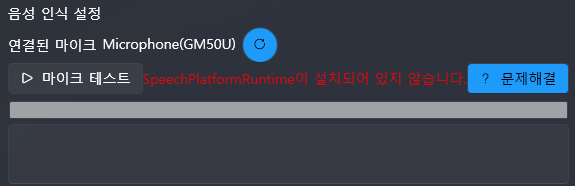

Microsoft Speech Recognition (Microsoft.Speech)¶
1. 概要¶
Microsoft Server Speech Platform Runtime は、音声認識および音声合成 をサポートするランタイムです。
VoiceScriptPlayer では、これを利用して 音声認識 (STT) 機能を実現しています。
⚠️ Windows に標準搭載されている SAPI（
System.Speech）とは異なり、
別途 ランタイム と 言語パック をインストールする必要があります。
2. インストールと準備¶
1) 必須ダウンロード¶
以下の 2 つを必ずインストールしてください：
-
Microsoft Server Speech Platform Runtime (x64)
ダウンロードリンク -
Microsoft Server Speech Recognition Language Packs（言語パック集）
ダウンロードリンク

最初のファイルは ランタイムエンジン、
2つ目のファイルは 言語パック（複数言語対応） です。
言語パックはファイル名の末尾が TELE で終わるものです。
2) 言語パックに関する注意¶
- 必ず自分の Windows 言語設定 または プロジェクトで使用する言語 に対応した言語パックをインストールしてください。
- 言語コードの例：
en-US→ 英語（アメリカ）ko-KR→ 韓国語ja-JP→ 日本語zh-CN→ 中国語（簡体字）- 正しい言語パックがインストールされていない場合、音声認識が起動しなかったりエラーが発生します。
3) インストール確認方法¶
インストールが正常に完了したか確認するには：
- コントロール パネル → プログラムと機能 を開きます。
- 次の 2 つの項目が表示されていれば正常にインストールされています：
Microsoft Server Speech Platform Runtime (x64)Microsoft Server Speech Recognition Language - <インストールした言語>
例（日本語パックをインストールした場合）：

3. VoiceScriptPlayer での利用¶
- インストール完了後、VoiceScriptPlayer が 自動的にランタイムと言語パックを検出 します。
- ユーザーが手動で起動する必要はなく、プログラムが必要な言語パックを確認した上で自動的に認識エンジンを起動します。
4. 実行エラーの解決方法¶
1) ランタイムのインストールエラー¶

- 原因： ランタイムがインストールされていない、または 32/64 ビットの不一致
- 解決方法：
Microsoft Server Speech Platform Runtime (x64)がインストールされているか確認してください。
2) 言語パックがインストールされていない¶

- 原因： 必要な言語パックがインストールされていない
- 解決方法：
- 言語パックのダウンロードページ から
プロジェクトに対応する言語パックをインストールしてください。 - 言語コード（
ko-KR,en-US,ja-JPなど）が一致していることを確認してください。
5. 注意事項¶
- 必ず x64 ランタイム をインストールしてください（x86 は非対応）。
- 使用する各言語ごとに 言語パックを個別にインストール する必要があります。
- Microsoft Speech Platform はすでに更新が終了しており、最新機能の追加は行われていません。
6. ライセンスと出典¶
- Microsoft Server Speech Platform Runtime: Microsoft ソフトウェアライセンス条項
- 公式ダウンロード：
- Runtime (x64)
- Language Packs